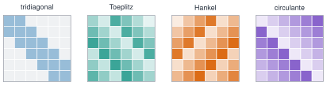
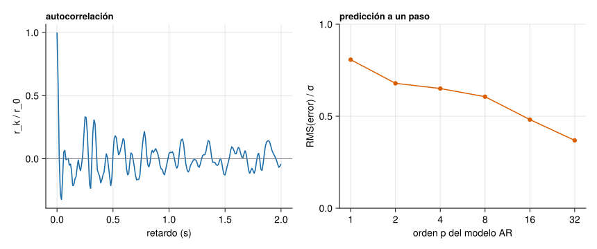

Ver el código
T4 = toeplitz([3, 2, 1, 0])
(T4, isposdef(Symmetric(float.(T4))))([3 2 1 0; 2 3 2 1; 1 2 3 2; 0 1 2 3], true)A1 · Matrices estructuradas
El nombre procede de Otto Toeplitz, que publicó en 1911 un trabajo sobre formas cuadráticas y bilineales de infinitas variables (Toeplitz 1911). El resultado más famoso sobre estas matrices es el teorema de Szegő sobre el comportamiento asintótico de sus valores propios, que enlaza la matriz con una serie de Fourier. Robert M. Gray, en su repaso para ingenieros, explica por qué interesan en procesamiento de señal: la covarianza de un proceso débilmente estacionario es una matriz de Toeplitz, y un filtro causal e invariante en el tiempo actúa mediante una Toeplitz triangular; las circulantes surgen al trabajar con la transformada discreta de Fourier (Gray 2006).
Fuente: Gray (2006), cap. 1, pp. 1–5. No se han consultado trabajos originales de Toeplitz ni de Szegő. Consultado el 25-10-2026.
Una matriz de Toeplitz es la que tiene las diagonales constantes:
\[ T_{ij}=t_{i-j},\qquad \mathbf T=\begin{bmatrix}t_0&t_{-1}&t_{-2}&t_{-3}\\t_1&t_0&t_{-1}&t_{-2}\\t_2&t_1&t_0&t_{-1}\\t_3&t_2&t_1&t_0\end{bmatrix}. \tag{1}\]
Hay \(2n-1\) números libres, no \(n^2\). Es simétrica si \(t_{-k}=t_k\) y hermítica si \(t_{-k}=\overline{t_k}\).

Relación con la convolución. Si un filtro causal tiene respuesta impulsional \(h_0,h_1,\dots\), su salida a una entrada \(\mathbf x\) es \(y_k=\sum_{i\le k}h_{k-i}x_i\): es el producto \(\mathbf y=\mathbf T\mathbf x\) con \(\mathbf T\) la Toeplitz triangular inferior de primera columna \(\mathbf h\).
Relación con la autocorrelación. Si \(x_t\) es un proceso débilmente estacionario de media cero, su autocovarianza solo depende del retardo, \(r_k=\mathbb E[x_{t+k}x_t]\) con \(r_{-k}=r_k\), y la matriz de covarianzas de \((x_1,\dots,x_n)\) es la Toeplitz simétrica \(\mathbf T_n=[r_{|i-j|}]\). Es semidefinida positiva: \(\mathbf a^{\mathsf T}\mathbf T_n\mathbf a=\operatorname{var}(\sum a_ix_i)\ge0\). Dicho al revés, solo si todas las matrices \(\mathbf T_n\) formadas con una secuencia \(r_k\) son semidefinidas positivas puede ser \(r_k\) una autocorrelación.
Un modelo autorregresivo de orden \(p\), AR(\(p\)), supone que cada muestra depende linealmente de las \(p\) anteriores y de una innovación \(e_t\) de ruido blanco (media cero y varianza \(\sigma^2\)):
\[ x_t=\sum_{j=1}^p\phi_j\,x_{t-j}+e_t . \tag{2}\]
Multiplicando por \(x_{t-k}\) y tomando esperanzas, para \(k\ge1\) resulta \(r_k=\sum_j\phi_jr_{k-j}\), que escrito para \(k=1,\dots,p\) es un sistema con una matriz de Toeplitz: las ecuaciones de Yule–Walker
\[ \underbrace{\begin{bmatrix}r_0&r_1&\cdots&r_{p-1}\\r_1&r_0&\cdots&r_{p-2}\\\vdots&&\ddots&\vdots\\r_{p-1}&r_{p-2}&\cdots&r_0\end{bmatrix}}_{\mathbf T_p}\begin{bmatrix}\phi_1\\\phi_2\\\vdots\\\phi_p\end{bmatrix}=\begin{bmatrix}r_1\\r_2\\\vdots\\r_p\end{bmatrix},\qquad \sigma^2=r_0-\sum_{j=1}^p\phi_jr_j . \tag{3}\]
Multiplicando (ecuación 2) por \(x_t\) y tomando esperanzas: \(r_0=\sum_j\phi_jr_j+\mathbb E[e_tx_t]\). Como \(e_t\) no está correlada con las muestras pasadas, \(\mathbb E[e_tx_t]=\mathbb E[e_t^2]=\sigma^2\), y se obtiene \(\sigma^2=r_0-\sum_j\phi_jr_j\). \(\square\)
Con las autocorrelaciones estimadas \(\hat r_k\) se obtienen los coeficientes del modelo, y con ellos la predicción lineal a un paso, \(\hat x_t=\sum_j\phi_jx_{t-j}\). Cuanto más «predecible» sea la señal, menor es el error. Yule (1927) y Walker (1931) estudiaron la periodicidad de series perturbadas y dieron nombre a estas ecuaciones (Yule 1927; Walker 1931).
Algoritmos estructurados. Como \(\mathbf T_p\) es Toeplitz, hay una recursión (Levinson–Durbin) que resuelve (ecuación 3) con \(O(p^2)\) operaciones en lugar de \(O(p^3)\), y calcula de paso los coeficientes de reflexión \(\kappa_k\), que cumplen \(\lvert\kappa_k\rvert<1\) si \(\mathbf T_p\) es definida positiva. Es útil para órdenes grandes, pero tiene una limitación numérica: con matrices mal condicionadas pierde precisión, y un \(\hat r_k\) calculado con ruido puede no ser una autocorrelación válida; conviene entonces regularizar o usar la autocorrelación sesgada (dividir por \(N\) y no por \(N-k\)), que garantiza matrices semidefinidas positivas (Golub y Van Loan 2013).
Ejemplo 1 Una Toeplitz de dimensión 4. Con \(t_0=3\), \(t_{\pm1}=2\), \(t_{\pm2}=1\), \(t_{\pm3}=0\) se obtiene la Toeplitz simétrica del código siguiente. Es de banda (\(b=2\)) y, por ser diagonalmente dominante, definida positiva.
([3 2 1 0; 2 3 2 1; 1 2 3 2; 0 1 2 3], true)Ejemplo 2 Un proceso AR(1). Con \(\phi\) y varianza de innovación \(\sigma^2\), \(r_k=\sigma^2\phi^{k}/(1-\phi^2)\): la autocorrelación decae geométricamente. La persistencia temporal (\(\phi\) cercano a 1) se refleja en el condicionamiento de su matriz de Toeplitz.
| ρ = φ | λ mín | λ máx | κ₂ |
|---|---|---|---|
| 0,20 | 0,668 | 1,50 | 2 |
| 0,90 | 0,053 | 13,54 | 257 |
| 0,99 | 0,005 | 27,21 | 5401 |
Cuando \(\phi\to1\) la señal cambia muy despacio, las muestras vecinas son casi iguales y la matriz tiende a ser singular: el condicionamiento crece rápido.
Ejemplo 3 Aceleración de un puente real. Se estima la autocorrelación de la aceleración vertical de la estación GS1 del puente de Torroja (medida 1, 100 Hz; véase R1 y (Pachón et al. 2018)), hasta un retardo de 0,5 s. La matriz de Toeplitz resultante y el modelo AR de la señal se calculan a continuación.
t, a, fs, = leer_torroja(TORROJA * "s1_medida01.txt")
x = a[:, 3] .* 1e3 # mg
r = autocorrelacion(x, 200)
Tt = toeplitz(r[1:51])
λT = eigvals(Symmetric(Tt))
ordenes = [1, 2, 4, 8, 16, 32]
razon = map(ordenes) do p
phi, _ = yule_walker(r, p)
pred = [sum(phi[j] * (x[s-j] - mean(x)) for j in 1:p) + mean(x) for s in p+1:length(x)]
sqrt(mean((x[p+1:end] .- pred) .^ 2)) / std(x)
end
nothingfig = Figure(size=(860, 360))
ax1 = Axis(fig[1, 1]; xlabel="retardo (s)", ylabel="r_k / r_0", title="autocorrelación", titlealign=:left, titlesize=13)
lines!(ax1, (0:200) ./ fs, r ./ r[1]; color=AZUL)
hlines!(ax1, [0]; color=GRIS, linewidth=0.8)
ax2 = Axis(fig[1, 2]; xlabel="orden p del modelo AR", ylabel="RMS(error) / σ", title="predicción a un paso", titlealign=:left, titlesize=13, xscale=log2, xticks=ordenes)
scatterlines!(ax2, ordenes, razon; color=NARANJA, markersize=9)
ylims!(ax2, 0, 1)
fig
La matriz de Toeplitz \(51\times51\) tiene todos sus valores propios positivos (el menor es 6,8e-07), como debe ser en una autocorrelación sesgada, aunque está mal condicionada (\(\kappa_2=\) 3,6e+06): la señal tiene unos pocos picos espectrales dominantes (los modos del puente) y muy poca energía en el resto. Por eso un modelo AR de orden 32 deja un error de predicción de 37 % de la desviación típica de la señal, frente al 81 % del orden 1. Es una predicción dentro de la muestra (los coeficientes se estiman con los mismos datos), así que mide el ajuste del modelo, no su capacidad de predecir datos nuevos.
Simulación 2. Un proceso AR(2) oscilante. La señal tiene una frecuencia propia \(f_0\) y una persistencia (el módulo \(r\) de los polos): \(x_t=2r\cos(2\pi f_0/f_s)\,x_{t-1}-r^2x_{t-2}+e_t\), con \(f_s=100\) Hz. Se observa con un ruido blanco de medida de desviación \(\sigma_{\text{med}}\). Mira cómo cambian la autocorrelación, los valores propios y el condicionamiento de la Toeplitz, y cómo el ruido de medida sesga la estimación de Yule–Walker.
viewof ar_r = Inputs.range([0.5, 0.99], {value: 0.95, step: 0.005, label: "persistencia r (adimensional)"})
viewof ar_f0 = Inputs.range([0.5, 30], {value: 8, step: 0.5, label: "frecuencia f₀ (Hz)"})
viewof ar_N = Inputs.range([200, 4000], {value: 1500, step: 100, label: "longitud N (muestras)"})
viewof ar_ruido = Inputs.range([0, 2], {value: 0.3, step: 0.05, label: "ruido de medida σ_med (unidades de x)"})
viewof ar_p = Inputs.range([1, 8], {value: 2, step: 1, label: "orden p del modelo ajustado"})
viewof ar_sem = Inputs.range([1, 50], {value: 3, step: 1, label: "semilla"})ar = {
const fs = 100, th = 2 * Math.PI * ar_f0 / fs;
const phi = [2 * ar_r * Math.cos(th), -ar_r * ar_r];
const x = simulaAR(phi, 1, ar_N, ar_sem);
const u = rng(1000 + ar_sem);
const y = x.map(v => v + ar_ruido * normal(u));
const kmax = 40;
const r = autocorrelacion(y, kmax);
// autocorrelación teórica del AR(2) (sin ruido), por la recursión de Yule–Walker
const rho = [1, phi[0] / (1 - phi[1])];
for (let k = 2; k <= kmax; k++) rho.push(phi[0] * rho[k - 1] + phi[1] * rho[k - 2]);
const r0x = (1 - phi[1]) / ((1 + phi[1]) * ((1 - phi[1]) ** 2 - phi[0] ** 2)); // varianza del AR(2) con innovación unidad
const teor = rho.map((v, k) => v * r0x + (k === 0 ? ar_ruido ** 2 : 0));
const m = 14;
const T = toeplitz(r.slice(0, m));
const {valores} = autoSimetrica(T);
const yw = yuleWalker(r, ar_p);
// predicción a un paso con los coeficientes estimados
const media = y.reduce((s, v) => s + v, 0) / y.length;
const pred = y.map((_, t) => t < ar_p ? null : yw.phi.reduce((s, ph, j) => s + ph * (y[t - 1 - j] - media), media));
const err = y.slice(ar_p).map((v, i) => v - pred[i + ar_p]);
const rmsErr = Math.sqrt(err.reduce((s, e) => s + e * e, 0) / err.length);
const sdY = Math.sqrt(r[0]);
return {fs, phi, y, r, teor, T, valores, yw, pred, rmsErr, sdY, kappa: valores[0] / valores[valores.length - 1], m};
}html`<div style="display:flex;flex-wrap:wrap;gap:1rem">
${Plot.plot({width: 520, height: 260, marginLeft: 50, x: {label: "t (s)"}, y: {label: "x"},
marks: [Plot.line(ar.y.slice(0, 300).map((v, i) => [i / ar.fs, v]), {stroke: "#1B6CA8"}),
Plot.line(ar.pred.slice(0, 300).map((v, i) => [i / ar.fs, v]).filter(d => d[1] !== null), {stroke: "#D95F02", strokeDasharray: "4,3"})],
caption: "Señal observada (azul) y predicción a un paso (naranja, discontinua), primeros 3 s."})}
${Plot.plot({width: 520, height: 260, marginLeft: 50, x: {label: "retardo k"}, y: {label: "r_k"},
marks: [Plot.ruleY([0]), Plot.line(ar.teor.map((v, k) => [k, v]), {stroke: "#1F2937"}),
Plot.dot(ar.r.map((v, k) => [k, v]), {fill: "#D95F02", r: 3})],
caption: "Autocorrelación teórica sin ruido de medida más σ² en r₀ (línea) y estimada (puntos)."})}
${Plot.plot({width: 320, height: 300, marginLeft: 40, padding: 0, x: {label: "columna"}, y: {label: "fila", reverse: true}, color: {scheme: "RdBu", domain: [-ar.r[0], ar.r[0]]},
marks: [Plot.cell(ar.T.flatMap((f, i) => f.map((v, j) => ({i, j, v}))), {x: "j", y: "i", fill: "v"})],
caption: "Toeplitz (14×14) de la autocorrelación estimada."})}
${Plot.plot({width: 320, height: 300, marginLeft: 50, y: {type: "log", label: "valor propio"}, x: {label: "índice"},
marks: [Plot.dot(ar.valores.slice().reverse().map((v, i) => [i + 1, Math.max(v, 1e-12)]), {fill: "#6F42C1", r: 4})],
caption: "Valores propios de la Toeplitz."})}
</div>`md`**${ar.valores[0] > 0 ? "κ₂(Toeplitz) = " + (1 / ar.kappa).toExponential(1) : "Toeplitz no definida positiva (el menor valor propio es ≤ 0 por redondeo)"}**. Coeficientes teóricos del AR(2): φ = (${ar.phi.map(v => v.toFixed(3)).join(", ")}). Estimados con Yule–Walker de orden ${ar_p}: φ̂ = (${ar.yw.phi.map(v => v.toFixed(3)).join(", ")}). **Error de predicción** RMS = ${ar.rmsErr.toFixed(3)}, desviación típica de la señal = ${ar.sdY.toFixed(3)} (cociente ${(ar.rmsErr / ar.sdY).toFixed(2)}).`El modelo supone un AR(2) estacionario con innovación gaussiana; la señal real de una estructura es más rica. Con \(\sigma_{\text{med}}=0\) y \(p=2\), Yule–Walker recupera los coeficientes teóricos con un error que baja con \(N\). Con ruido de medida, los coeficientes estimados quedan sesgados (el ruido infla \(r_0\) pero no \(r_k\)): el modelo AR(2) deja de ser el verdadero, y subir \(p\) lo compensa en parte. La predicción se evalúa sobre los mismos datos con que se estiman los coeficientes.
Un proceso AR(1) tiene \(\phi=0{,}6\) y varianza de innovación \(\sigma^2=1\). Calcula su autocorrelación en el retardo 1, \(r_1\).
\(r_0=\sigma^2/(1-\phi^2)=1/0{,}64=1{,}5625\) y \(r_1=\phi\,r_0=0{,}6\cdot1{,}5625=0{,}9375\) (Yule–Walker con \(p=1\): \(\phi=r_1/r_0\)).
La matriz de Toeplitz construida con la autocorrelación muestral sesgada (dividiendo por \(N\)) de una señal es siempre simétrica y semidefinida positiva.
Verdadero. Con la media restada y la señal prolongada con ceros, \(\mathbf T_n=\tfrac1N\mathbf X^{\mathsf T}\mathbf X\), con \(\mathbf X\) la matriz rectangular de datos desplazados: es una matriz de Gram, simétrica y semidefinida positiva (pueden aparecer valores propios ligeramente negativos solo por redondeo). Con el divisor \(N-k\) esta garantía se pierde.
Son las mismas que aparecen en el margen, junto al texto. La lista completa del curso, con el estado de verificación de cada ficha, está en recursos/bibliografia.bib del repositorio.
Golub, Gene H., y Charles F. Van Loan. 2013. Matrix Computations. 4.ª ed. Johns Hopkins University Press.
Gray, Robert M. 2006. «Toeplitz and Circulant Matrices: A Review». Foundations and Trends in Communications and Information Theory 2 (3): 155-239. https://doi.org/10.1561/0100000006.
Pachón, Pablo, Rafael Castro, Enrique García-Macías, Víctor Compán, y Esther Puertas. 2018. «E. Torroja’s bridge: Tailored experimental setup for SHM of a historical bridge with a reduced number of sensors». Engineering Structures 162: 11-21. https://doi.org/10.1016/j.engstruct.2018.02.035.
Toeplitz, Otto. 1911. «Zur Theorie der quadratischen und bilinearen Formen von unendlichvielen Veränderlichen». Mathematische Annalen 70 (3): 351-76. https://doi.org/10.1007/BF01564502.
Walker, Gilbert T. 1931. «On periodicity in series of related terms». Proceedings of the Royal Society of London. Series A 131 (818): 518-32. https://doi.org/10.1098/rspa.1931.0069.
Yule, G. Udny. 1927. «On a method of investigating periodicities in disturbed series, with special reference to Wolfer’s sunspot numbers». Philosophical Transactions of the Royal Society of London. Series A 226: 267-98. https://doi.org/10.1098/rsta.1927.0007.